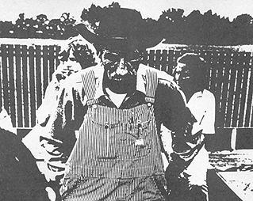
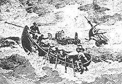
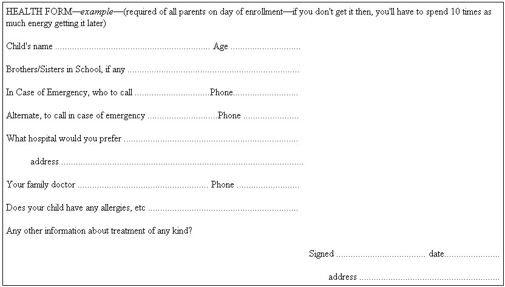

NUMBER THREE IN THE SERIES
SALLI RASBERRY & ROBERT GREENWAY
Reprinted by permission from RASBERRY/$3.95 plus 50 cents postage/
Freestone Publishing/440 Bohemian High way/Sebastopol, Calif. 95472.
A very few free schools, completely isolated or underground, seem to avoid the dominant culture altogether, their space secure-for the moment at least . . . that mountain-valley vision seemingly true...
But for all we've said so far about getting free of the dominant culture, the painful reality is that most free schools are attempting to build fear-free unhassled envelopes of free space deep within the heartlands of the dominant culture. This almost always requires some degree of accommodation, the mastery of requirements, laws, details.
It is difficult to generalize about this. The degree of accommodation obviously is a sensitive matter, dependent oil the authenticity and focus (how much "in" or "out") of your life styles; and the diversity of life styles present in the group trying to start the school. Which culture is your group most loyal to, that which makes the laws, or the one which, if it takes the dominant culture's laws seriously at all, takes them with a wry relativity?
Super-intricate strategies for second-guessing authorities don't often work. Some new schools in a mood to go underground try conning the bureaucracies by an apparent immense loyalty to every facet of every law (the school that calls up inspectors!), losing everything because they are unable to mask what they're really about. And another school may go underground and not bother anyone and fail when found out because they didn't lightly con what could have been a fairly sympathetic bureaucracy.
We can say (rather nervously) that most free schools that seem to be making it don't seem hung up on the details, the reasons ranging from totally ignoring the details to giving them to one superabsorbent soul who takes them on and silently solves them without dumping them - or the almost inevitable paranoia - onto the rest of the school.
We advocate facing the realities, quickly, then getting to the business of doing the alternative school; not naively, but realizing that the joyful freedom you want will always be out of context amidst vast details and bureaucratic demands, and you've got to go ahead with what you know you want. Someone, one of your group, will eventually have to deal with a lot of stuff. That doesn't have to be a bummer.
* * *
The power of the bureaucracies stem from the fact that laws governing schooling (in many states) are so stringent that their most conservative public schools couldn't meet them. But the laws are there, ready to be used as weapons of repression as needed. The best approach: don't make bureaucrats nervous. Your strongest force isn't your ability to fight them head on, which is almost nil; but the spirit emanating from beliefs in what a new approach to learning based on love can be; your vision, not your fear.
* * *
In "Getting Started" we mentioned the benefits of a coordinator. Such a person may or may not be the person to whom the eventual need to handle details gravitates. If so, don't let the detail stuff bring down the skillful human coordinating of the school program. Two different kinds of artistries are involved: the school coordinator - someone who can knit together the needs and resources of people within the school without diminishing the joyful chaos; the "dealer-with-bureaucracies" coordinator - someone who can (1) handle details without bringing everyone else down, (2) give the authorities your best vibes rather than your fear (natural though the latter may be), (3) and do this without going on his own private school-shaping power trips. (For example, if the person coordinating things is in favor of a completely underground operation, make certain the rest of the school is on the same trip. Always present one voice to authorities, and make certain that voice profoundly reflects what the whole group wants to reflect, etc.)
Obviously, such a dealer in details is not easy to find. It may be a founding parent, a teacher, a board member; a student from a local college (danger! danger!), a former road manager of a rock band. The ideal person for this job might be like a caring, compulsive masochist, deeply into alternative education, with a super-high capacity for solving problems, someone who can deal with bureaucracies, inspectors and the like.
* * *
Besides love, gall, and/or coordinators, another way of deal ing with details is the formation of regional groups of free schools. It's happening rapidly across the country: The MidWest Cooperative out of Minneapolis; the group in the Ann Arbor-Detroit area; New Schools Movement, Inc., out of Seattle; The Experimental Schools Corporation in Arizona; The Regional Summerhill Societies; Education Switchboard at Project One in San Francisco; the group in New Mexico. Such groups can research and communicate the laws, summarizing the many local variables, share experiences with the idiosyncrasies of local examining bureaus and personnel; share a lawyer, tax help, an accountant - not to mention the more joyful sharing of ideas, people and good vibes at periodic festivals.
(There are probably more regional associations than these - we'd like to know about them for the next, more detailed version of this book, and so would lots of other people whose cards and letters asking for help at the local level pour into the New Schools Exchange every day. Let them know too, so people in your area can find you more easily.)
* * *
Alone or with help, underground or open, these are the kinds of details that exist to be worked on - when you want - if you want! - according to whatever "strategy" your school evolves.
Incorporating
The way to become official, legal, and all that is to incorporate. It's the common form for dealing with the culture - virtually essential in some locales or with some groups; merely very desirable in other instances.
You can file incorporation papers yourself for about $15, but many, including the New Schools Exchange, strongly advocate letting an attorney handle it (botching the job just draws attention to you which you probably don't want). Many schools have found attorneys soft on free-schools who will do it free. (Try American Civil Liberties Union offices. If not in the urban areas where the fighting is pretty heavy these days, they may have names of available young lawyers who can help you. A "regular" lawyer usually charges around $200 to draw up papers and file them - whatever the state-bar-set minimum fee is.)
To facilitate matters, or for doing it yourself, obtain a copy of incorporation papers for non-profit organizations from an existing free school, or from the New Schools Exchange (who will make such papers available free to subscribers), or by checking IRS "Circular E" the tax guide for non-profit groups, which carries an example of incorporation papers.
Non-profit Status
If incorporating, you will want to do it as a non-profit organization. This reduces taxes, allows you to receive donations without taxing, and allows other benefits on insurance, buying, etc. Non-profit status exists both within the federal tax structure and in most states. You must apply to both. In some states, the status is granted almost immediately. Federal non-profit status usually takes at least a year, however, and often takes longer, sometimes getting into investigations and the like. The main thing is that you apply for the federal status and get that going. The state status, necessary anyway, can cover you in the interim. Also, if you have a lawyer, your status as non-profit will be "under advice of counsel" - and you can go ahead and act as if you have it.
More TaxStuff
Hang on. This is Waterloo for many struggling schools.
In addition to non-profit status you'll need at least some of these forms if you collect any money, pay any salaries, etc .:
Form SS-4 - application for Employer Identification Number - needed for all other tax business (you can speed up things by applying for this before incorporation).
Form W-4 - needed for each employee. Indicates how many exemptions he's claiming.
Form 941 - the quarterly tax return for your corporation (required even if non-profit). These come stamped with your number when you are issued your Employer ID.
Form 501 - monthly tax payment form (required if you withhold more than $100 in taxes and FICA each month - a good idea anyway). Due the 15th of each month.
Form W-2 - the form telling each employee how much tax you withheld during the year.
Check with your nearest Internal Revenue Office for information about taxes and tax reductions possible for non-profit organizations.
We think it very dangerous to walk the razor's edge between incorporating on the one hand and being sloppy about taxes on the other. The Internal Revenue people (or rather, their computers) will not notice you if the forms roll in on time and are correctly filled out. A friendly accountant can be a great help with all this.
* * *
State Laws and Free Schools
There are laws about organizations, and of course laws about taxes and exchanges of money. Then there are the incredible state laws having to do with "The Education of the Children of Citizens," as one state put it.
For reasons stated above you may wish to stay away from all this, at least for now. (We are vividly aware, from our own lives and what we see in others, that every hour spent on such things is an hour away from "living your life with your kids.")
We wish we had some simple, helpful summaries to pass on. We don't. We wrote to every state asking for their laws with regard to private schools, tutors, accreditation, compulsory school attendance, etc. Even after months the responses still dribble in. We studied, compared, categorized and analyzed, but we've ended up with more doubts than clear suggestions. Here are some things that worry us:
-Some of the laws are almost totally incomprehensible to our non-legal minds (perhaps to anyone's mind!) . . .
-Laws of some states seem filled with contradictions, ambiguities, etc.
-Most of the laws seem to intrude into the basic freedoms of even the most patriotic citizens.
-Laws in some states seem so stringent (even vindictive) that we wonder how any non-public schools could exist, let alone "free" schools.
-Which leads us to the slightly paranoid conclusion that many free schools must exist because of opholes-loopholes that might be plugged if pointed out. So perhaps we shouldn't say anything about the laws at all. (But we concluded that the states will certainly find out about free schools as the number grows, and probably there will be attempts at restrictive legislation, so we might as well start getting good at the laws that do exist, sharing what we know about changes and dangers, solidifying our base- or at least thinking about moving to Canada, as with the Puritans and others throughout history who did not take lightly the loss of their right to educate their own child ren!)
THE CAMBRIDGE FREE SCHOOL, 5 HOWARD STREET, CAMBRIDGE, MASSACHUSETTS 02139.
The cambridge Free School doesn't cost anything to go to. Some of our friends let us know that they think we're suicidal. Nothing upsets people so much, we've discovered, as our slight disrespect for money. The Free School is also free in terms of the spirit. This, people tend to assume about us.
John and Renee Davis founded the Free School and named it. They keep it free because the tuition system, even at its most benign, categorizes people on the basis of their ability to pay. Heavy. (The best way to know about that is to be the victim of a large scholarship at a small private school. Or live in the suburbs.) The Free School in Cambridge is the revolution not because of a radical curriculum but because it's a place to make a stand. You say, " Thank you for your moral views. How do you pay the rent?"
Here's how. Teachers are not paid or paid very little. Next year they will still be paid very little again but at least a little more. We make money with bake sales and rummage sales. We sell fruit on the Common and flowers in the Square. We silk-screen posters and put out canisters for change in stores. We get some large donations. We're at the point now of starting an educational consulting service but one with some differences: if the client likes our ideas about classrooms and teacher training, we'll build the classroom with the teachers that are going to be using it and we'll stay around until people feel comfortable with our innovations and our reasons for innovating.
We're making nursery school furniture from waste materials. Our stools and high chairs are hand crafted and elegant. When we have more money, we will buy the equipment with which to make them more quickly.
An interesting point about our struggle for independence is that it forces us to deal with the system, i.e., buying and selling, but in ways that are personal, direct and reasonably satisfying. Presumably that's an aspect of the revolution.
The school itself is based on the Leicestershire model, an import from England, stressing a rich and expressive environment within which young children can learn what they want, when they want. We have a lot of grown-ups who are keen on things and a lot of keen things. There are 26 children in the school, ages 3-6, most of them in their second year. Together they form a strong, supportive group, a community. Together we work for survival. Nothing we do is obsecured from adults or children. For now this covers what we mean by "growing up."
Our location is in the middle of black, white, student, working Cambridge. But we're really a system ready to root wherever there's a private or public school. If you would like to help us or if you would like us to help you, get In touch. You know, "A free school in a rich city is the revolution."
* * *
So, for all that, here are a few tentative observations about the law-more like our half of a conversation that might continue. As we go on with our research, and if you send in your ways of dealing with the problem, we'll collect it together and make it available through the New Schools Exchange and/or a subsequent version of EXERCISES.
*A few states (i.e., Texas, Illinois, and Missouri) have no laws affecting private schools.
*A few states require only teacher certification of some kind (i.e., Florida, Minnesota, Mississippi, Arkansas, and Delaware).
*A few states have extremely stringent laws, requiring, for example, the posting of performance bonds of up to $10,000, proof of meeting the same standards as public schools (including curricular requirements, even full accreditation, etc.) Such states are: Maryland, Wyoming, Kentucky, North and South Dakota, Pennsylvania, Ohio, Nevada. Since we know of many very free schools in these states, some of them very above ground, we wonder how they do it.
* * *
Here are aspects of the laws potentially affecting the founding and operation of free schools:
Teachers -whether or not degrees, certification, etc. are required (or, as in some states, whether "evidence of capability" is enough, or one certified teacher per staff, etc.)
Compulsory Attendance in Public Schools -all states now have such laws, most list "attendance at private schools" as a suitable exception to the law.
Attendance Records -most states (sometimes administered through counties or even local school districts) require attendance reports-all names!-periodically.
Required Courses -quite a few here and there-like driver education at the high school level, citizenship, state history, etc. A few states require, incredibly, the same subjects as in public schools. (We've seen several free schools beat this simply by "integrating" such requirements into the rest of their "curriculum"-or "covering" the topics in a few hours.)
Accreditation -some states recommend, and a few require, that all private schools gain accreditation from regional (or state) accrediting boards-a little matter requiring thousands of dollars (for books, buildings, playground equipment, etc.) Many free schools simply apply (having an application on file is the main thing) and then forget about it . . .
Granting Diplomas -some states (i.e., California, Oregon, Washington) allow any organization to grant whatever diploma it wants so long as it's "consistent with the goals of the organization." Other states have restrictions of varying stringency.
Buildings "This is the Place"
Getting a place for a free school (and keeping it) is the source of more frustrating troubles than any other factor. Building inspectors seem the most dogged and restrictive of all the petty bureaucratic hasslers with which you'll have to deal.
"Standards" for schools usually come down from the state level and are "recommended" to the local districts. The prevalence of square, sterile, cement block, drab, plastic, ugly school buildings, with almost no exceptions, says something about the codes, and the imagination of the people behind them.
Private schools (in most states) are subject to whichever of the state recommendations the local (county, usually) building departments wish to enforce. Trouble can come from many sources: zoning-neighbors may complain; zoning regulations usually allow only one school per so many blocks or per so many kids; fire laws-old houses turned into schools usually have doors opening the wrong way, no fire escapes, too narrow stairwells, etc.; health-there must be so many toilets per group (still segregated by sex in some areas!), kitchens can rarely meet the standards even if new!
The most common solution we've seen is for a group to rent (or, if flush, buy) a house in as good a condition and as isolated as possible, and start complying (or, if in trouble, promising to comply) for as long as it takes for one side or the other to get worn down.
Here are some alternatives to homes-become-schools:
-storefronts (perhaps under cover of an urban action office, or sponsored by a sympathetic professional with a reason for being there);
-affiliate with a college or university, use their facilities or get them to lease a location via a trusted professor for training their teachers, or some such cover;
-lease or rent or borrow the religious education wing of a church (lovely Unitarians and Quakers are soft touches for this);
-one school (which shall remain nameless) registered as a commercial campground and was able to build a lot of "temporary camping structures" which looked very much like domes;
-garages, basements, floating from home-to-home-all used with varying degrees of success by more underground schools;
-parks are good meeting and play places, have toilets, often other facilities. Schools which use them often just don't meet on rainy days;
-"schools without walls"-buses and trucks that rove between driveway, garage, field and forest.
But as one free school student put it: "We use whatever building we want. What can they really do to us if they find us? We're just learning to play guerrilla, and the more they hassle us, the more we'll learn. It's fun, for sure."
Furnishings
Think of old rugs, parachutes, old barrels, hundreds of cushions (there can never be enough CUSHIONS), mattresses, fiberboards, old curtains, boxes, empty spool drums, picnic table benches (the cheapest furniture on the market), VW-bus seats . . . the list is endless.
Health
And there are health codes pertaining to schools (and, lest you forget, all housing, private or public, pets, children-including their nutrition-infectious diseases).
So, water should be tested, toilets kept clean, and no food preparation.
More practically, take first aid kits on all trips (required in some states). Sending a teacher to a first-aid class is a very worthwhile trip-can give a sense of physical freedom to a whole school).
To ease your minds (and theirs) have parents fill out emergency forms for children-accidents do happen and most hospitals won't admit children without permission of parents.
And know the symptoms and solutions for hepatitis, ringworm, impetigo, and, in free high schools, body crabs, "social diseases," and other foreign growths
Money
Most schools think they need about twice as much money as they've got. (For one that doesn't, see the box on the Cambridge free, free school).
If you're going to pay rent on something, and pay at least several subsistence-level salaries, you'll need a few hundred dollars at least with which to get started, and some parents who will continue to pay tuition beyond the first month
But there is a fantastic amount of bull crap surrounding the issue of money and free schools. Money is usually blamed on most failures. Rather, it is the most common scapegoat. In this culture, in or out of it, on welfare or not, there is enough money to support "alternative learning environments" without resorting to huge energy rip-offs for fund raising and soul-endangering trips of sucking around foundations pledged to maintain the dominant culture (termed "constructive change from within existing institutions").
The simplest answer of course is tuition. According to the New Schools Exchange the national average (of free schools charging tuition) is about $75 per month per child (with varying arrangements for reducing tuition for 2nd and 3rd children in the same family). Such schools find they can make it without big fund raising trips if (and this is a painfully big if) families meet their tuition commitments.
For some reason, many families in free schools across the country don't pay their tuition. We've heard of one solution: collect the year's tuition in advance. For those without funds, require that it be borrowed from a local bank (it helps if an executive of the bank is on your board), using the other money from those who do have it as collateral for those who don't. Then you've got a solid base from which to run the school or even for borrowing. No pressure, no bad trips about begging parents or blocking kids at the door when the tuition is finally three months overdue.
Schools that seem to manage their money with little energy loss usually set a conservative budget, based on say, 60 per cent collection of the total on-the-books tuition. The remaining 40 per cent covers those who don't or can't pay, for formal scholarships as opposed to rip-offs, to secure loans at the bank, etc.
We've wondered why more free schools haven't latched onto the more wealthy in the alternative cultures from which they are springing. For example, every rock band on the rise could sponsor a free school.
A few schools have solved-or created more interesting-financial problems by developing business enterprises-like putting out a paper, running a store or fruit stand or, as in the case of Orson Beane's school in Manhattan, renting themselves out as models or commentators. (Keep an eye on your non-profit status, however.)
Fund raising efforts rarely seem to work. Except for a few urban drop-out experimental schools heavily funded, most foundation-support attempts seem a false hope and a waste of precious energy.
Insurance
It's important to have liability insurance covering all operations of the school. A good private agent can get it for you for less than $100 per year. You'll have to meet some standards to get it.
Most states require workman's compensation insurance for employees.
And be sure your car is covered for whatever use you put it to for the school.
Records-Money
Helps to keep clear, solid books-can save countless hours of hassles later on. Get an accountant's book or ruled ledger, keep track of donations, tuitions and operating expenses. (Get good at remembering to transfer money to "petty cash" when put into your school checking account-things like that).
An accountant turned on to free schools has offered his services free. He will help set up and check your books. Write:
Stanley Cobb, Public Accountant, 647 East Palm St., Altadena, California 91001.
Records-Students
Request kids' past records when enrolling them. Such requests, coming from a registered private school, must be honored by a public school. (Most school districts, in most states will not give out records to parents, believe it or not.)
We've seen several schools maintain a simple, open file on each student (open to all, that is, unless the student prefers to have it closed). Anyone in the school (presumably most often teachers) drop comments into the file anytime they think of it. The student can do it himself. Then when a transcript must be constructed for transfer to another school or for college entry or job application, there is plenty of grist to work from.
Transportation
States have varying codes regulating "school buses"-you can usually get by without being hassled if you don't have kids hanging out the top and all the windows singing dirty songs as you drive by the police station. In some states, transporting any more than nine students requires school-bus licensing (in California this also happens to be the maximum legal capacity of a VW bus.)
Some schools make a really fine, graceful thing out of mobility-using trains, buses, thumbs, even an occasional charter flight (three free schools combining forces.)
|
 |
 |
 |